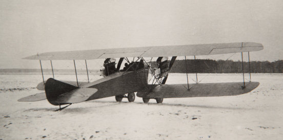
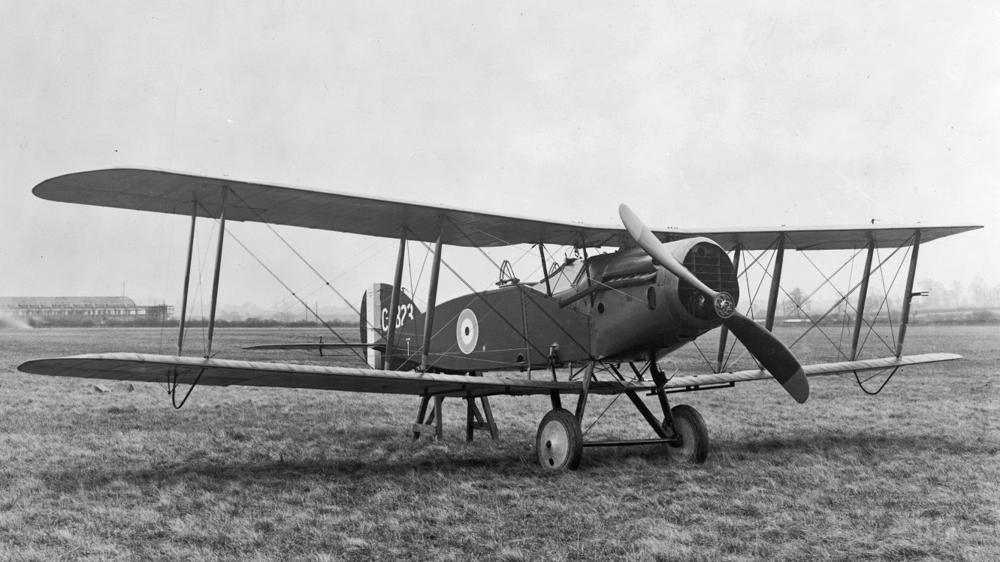
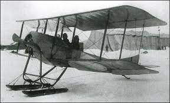
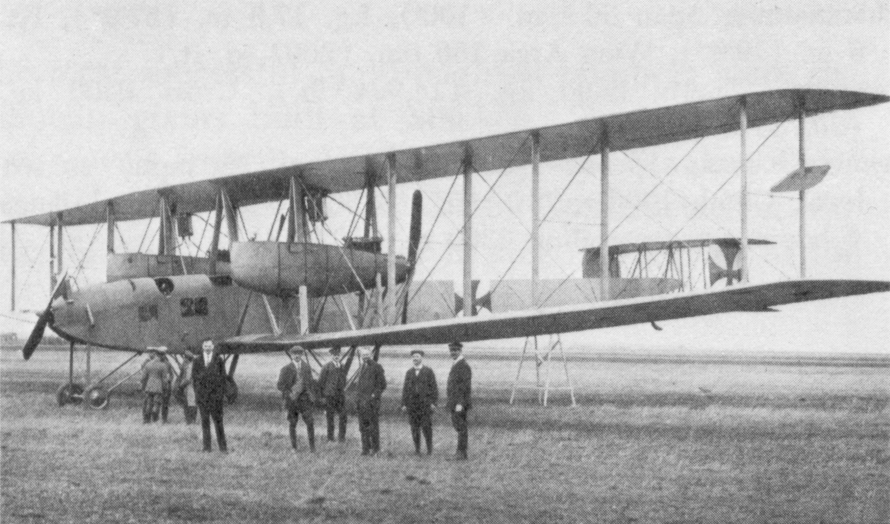
Durante la primera guerra mundial se evidencio la mayor parte de los conceptos sobre la guerra aerea, y un gran avence militar para la aviacion. Estos aviones se formaban principalmente por dos clases: La primera, los bombarderos, aviones con capasidad de soltar grandes cantidades de bombas. Segundo: los cazas, estos son los que cazan a los bombarderos
SEGUNDA GUERRA MUNDIAL.
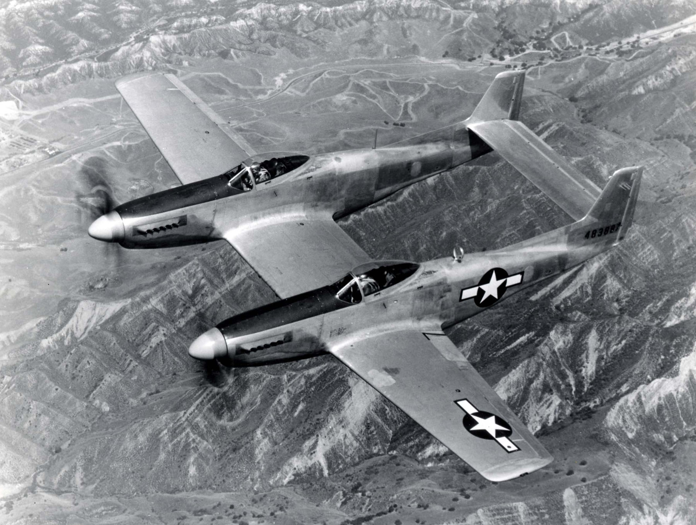
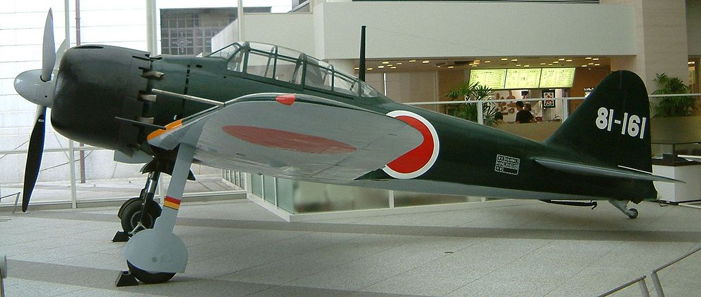
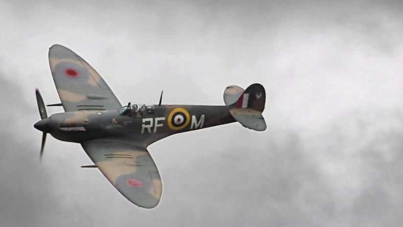
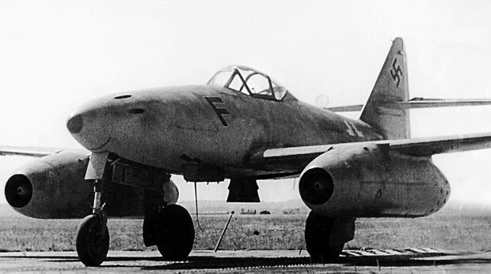
Durante la segunda guerra mundial se evidencio un gran avanze en la aviacion, el material de construccion cambio de ser madera a metal, y se le implementaron nuevas tacticas para estos, como el famoso bombardeo en carpeta o bombardeo en picada, así mismo llego el Messershmitt me 262, el primer caza a reaccion, por cada 1 caza a reaccion derribado, serían derribados 25 cazas aliados (1:25). Aun así tambien fue lanzada la primera Bomba nuclear desde un B-29 (usa)
Guerra de Corea.
Durante la guerra de corea, la aviación fue mucho mas allá de lo que se creía en la primera o segunda guerra mundial. La llegada de los rusos fue un golpe fuerte para estados unidos, ya que los rusos también contaban con sus cazas a reacción, uno de estos era el famoso Mikoyan-Gurevich MIG-17 y su contraparte Estado unidensa, el NORTH AMERICAN F-86 Sabre. Durante esta guerra se hizo uso de misiles en los aviones, poco efectivos para enfrentamientos aéreos.
Guerra del golfo.
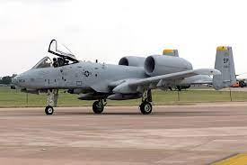
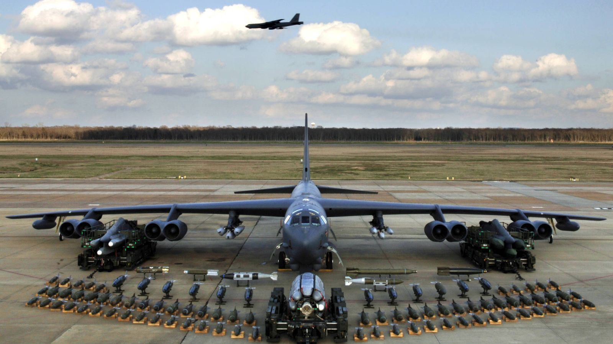
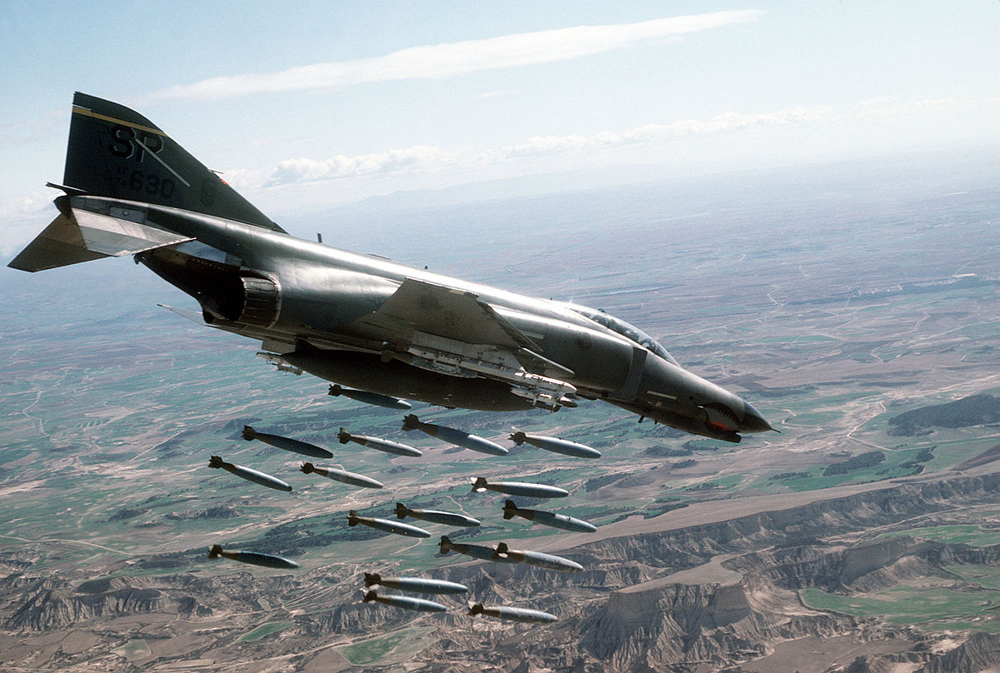
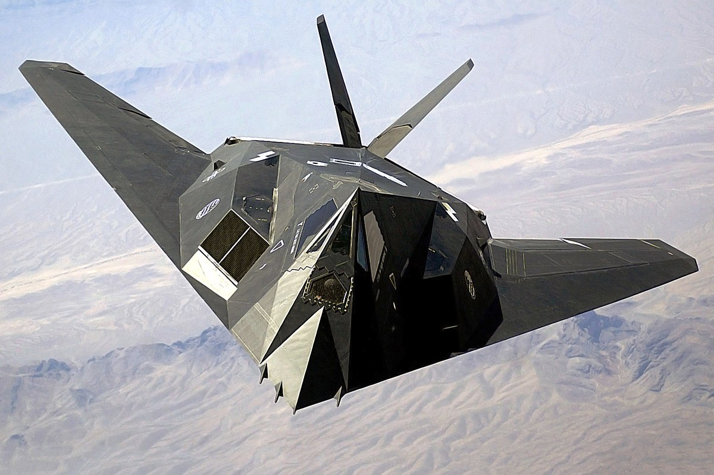
En la guerra del Golfo, el principal protagonista del poderio aereo era ESTADOS UNIDOS. El cual habia fabricado un A-10 thunderbolt, el cual trae un cañon de 30 milimetros que puede destruir cualquier aparato de ataque, tambien se empleo el famoso ‘F-117 nighthawk’, el ‘f4 phantom’, entre otros. El poderio aereo que tuvo Estados unidos en la guerra del golfo era el suficiente para poder así ganar el enfrentamiento.


 Durante la guerra de corea, la aviación fue mucho mas allá de lo que se creía en la primera o segunda guerra mundial. La llegada de los rusos fue un golpe fuerte para estados unidos, ya que los rusos también contaban con sus cazas a reacción, uno de estos era el famoso Mikoyan-Gurevich MIG-17 y su contraparte Estado unidensa, el NORTH AMERICAN F-86 Sabre. Durante esta guerra se hizo uso de misiles en los aviones, poco efectivos para enfrentamientos aéreos.
Durante la guerra de corea, la aviación fue mucho mas allá de lo que se creía en la primera o segunda guerra mundial. La llegada de los rusos fue un golpe fuerte para estados unidos, ya que los rusos también contaban con sus cazas a reacción, uno de estos era el famoso Mikoyan-Gurevich MIG-17 y su contraparte Estado unidensa, el NORTH AMERICAN F-86 Sabre. Durante esta guerra se hizo uso de misiles en los aviones, poco efectivos para enfrentamientos aéreos.